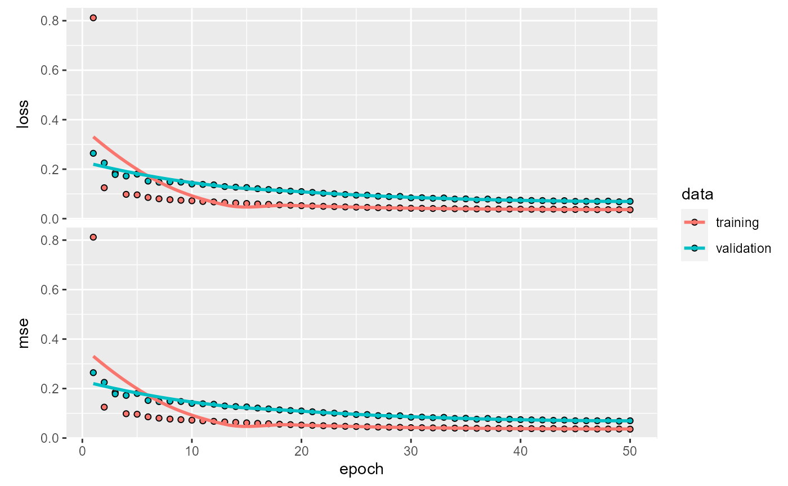
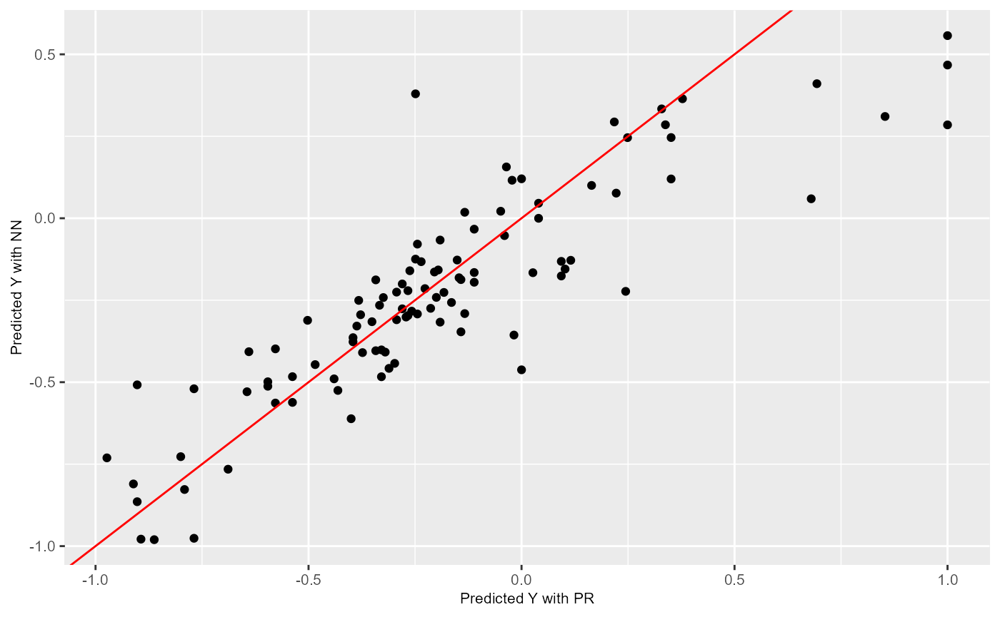
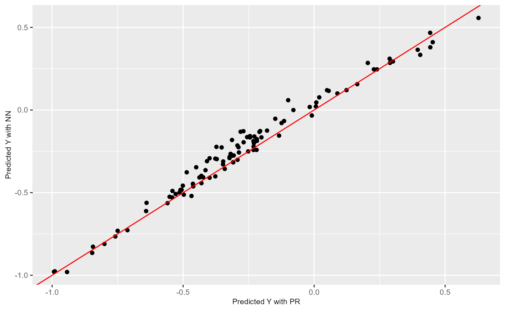
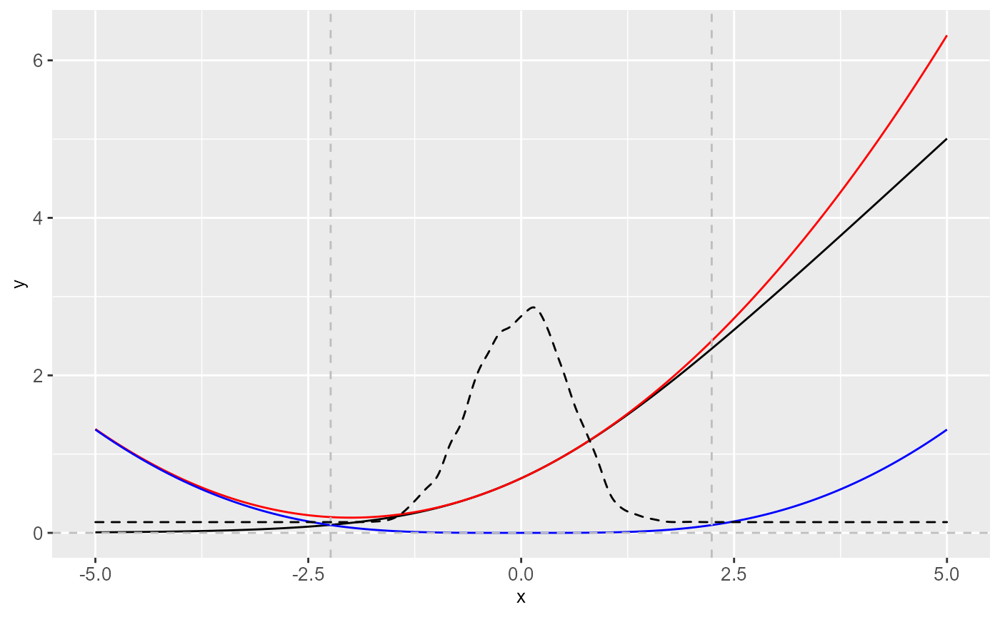
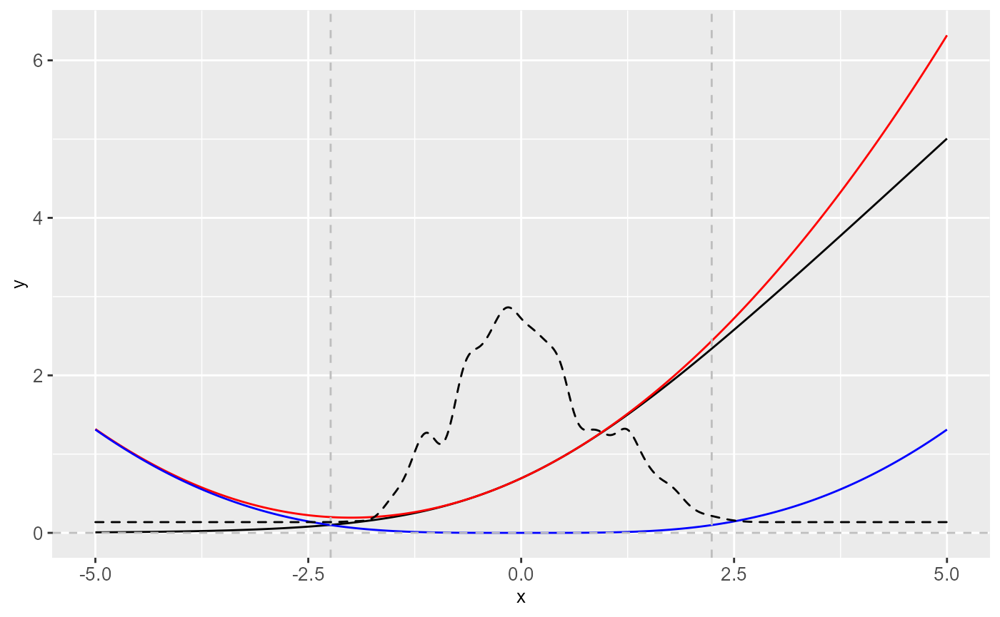

nn2pr-01-introduction.RmdInitial setup:
library(nn2pr)
library(keras)
#> Warning: package 'keras' was built under R version 4.0.5
tensorflow::set_random_seed(42)The main objective of this package is obtaining a representation of a feed forward neural network in terms of a polynomial regression. This is achieved by applying a Taylor extension at each activation function in the neural network, and combining that with its trained weights, the coefficients of a polynomial regression are obtained.
The main insights about the mathematical process to build this relationship can be found in this article or its free access option through the orginal arXiv version.
This vignette presents the direct usage of the package with a simple case. For additional tools to build neural networks with the needed conditions that ensure the correct theoretical behavior (constraining the weights and biases), check the VIGNETTE 2 that also uses the extension package nn2prtools.
In order to show the most common application of nn2pr, we will be solving a regression problem on the Boston dataset, included in the keraspackage.
boston_housing <- dataset_boston_housing()
c(train_x, train_y) %<-% boston_housing$train
c(test_x, test_y) %<-% boston_housing$testThe data needs to be scaled, both for training the NN and for the nn2pr algorithm to work properly. In the theoretical foundation of this method, the scaling assumed is to the \([-1,1]\) interval, so we will use it:
# Join the predictor variables (x) and the response (y)
train <- as.data.frame(train_x)
train$Y <- matrix(train_y, ncol = 1)
test <- as.data.frame(test_x)
test$Y <- matrix(test_y, ncol = 1)
# Use the train data to obtain the scaling parameters, then apply them both to
# test and train
maxs <- apply(train, 2, max)
mins <- apply(train, 2, min)
train <- as.data.frame(scale(train,
center = mins + (maxs - mins) / 2,
scale = (maxs - mins) / 2))
test <- as.data.frame(scale(test,
center = mins + (maxs - mins) / 2,
scale = (maxs - mins) / 2))
# Divide again in x and y
train_x <- as.matrix(subset(train, select = -c(Y)))
train_y <- as.matrix(train$Y)
test_x <- as.matrix(subset(test, select = -c(Y)))
test_y <- as.matrix(test$Y)
# Define the dimension p of the problem:
p <- dim(train_x)[2]The method is expected to be applied to a given trained densely connected feed forward neural network (NN from now on), also referred as multilayer perceptron (MLP). Therefore, this step is completely optional and can be skipped if any preferred method has been used to train a NN and there is an already given NN and its weights.
In order to present an example, here we will create and train a NN. Our choice will be to use the keras framework to build and train it.
| Note: It is important to note that in order to avoid asymptotic behavior of the method, it is useful to impose some kind of constraint when training the neural network weights. This is covered in VIGNETTE 2 |
First, we build the model
nn <- keras_model_sequential()
nn %>% layer_dense(units = 30,
activation = "softplus",
input_shape = p)
nn %>% layer_dense(units = 30,
activation = "softplus")
nn %>% layer_dense(units = 1,
activation = "linear")
nn
#> Model
#> Model: "sequential"
#> ________________________________________________________________________________
#> Layer (type) Output Shape Param #
#> ================================================================================
#> dense (Dense) (None, 30) 420
#> ________________________________________________________________________________
#> dense_1 (Dense) (None, 30) 930
#> ________________________________________________________________________________
#> dense_2 (Dense) (None, 1) 31
#> ================================================================================
#> Total params: 1,381
#> Trainable params: 1,381
#> Non-trainable params: 0
#> ________________________________________________________________________________Compile the model:
compile(nn,
loss = "mse",
optimizer = optimizer_adam(),
metrics = "mse")And train it:
history <- fit(nn,
train_x,
train_y,
verbose = 0,
epochs = 50,
validation_split = 0.3
)We can visualize the training process:
plot(history)
#> `geom_smooth()` using formula 'y ~ x'
| Visualización de la NN, cambiar la funcion: |
# Obtain the predicted values with the NN to compare them
prediction_NN <- predict(nn, test_x)
plot_NN_PR_comparison(test_y, prediction_NN)
After the NN has been trained, using any chosen method by the user, the parameters have to be extracted and reshaped, if needed, to match the expected input of the function nn2pr_algorithm(). This input consists in the following objects:
weights_list A list of matrices with a weight matrix at each layer. The weights matrices should be of dimension ((1+input) * output) where the first row corresponds to the bias vector, and the rest of the rows correspond to each of the ordered vector weights associated to each input.af_string_list A list of strings with the names of the activation functions at each layer.q_taylor_vector A vector of integers containing the order of the Taylor expansion performed at each layer. If the output layer has a linear activation function, then the last value should be 1.Following the example of the NN that we created previously, we need to extract its weights and biases and reshape them. Particularly, the keras framework by default separates kernel weights matrices of dimension (input * output) and bias vectors (1 * output), so we need to add the bias as the first row of a matrix ((1+input) * output).
keras_weights <- keras::get_weights(nn)
# Due to keras giving weights separated from the bias, we have twice the
# elements that we want:
n <- length(keras_weights)/2
nn_weights <- vector(mode = "list", length = n)
for (i in 1:n){
nn_weights[[i]] <- rbind(keras_weights[[2*i]], keras_weights[[2*i-1]])
}The activation functions that we used can be stored as:
af_string_list <- list("softplus","softplus", "linear")And finally the order of the Taylor approximation that we are going to choose is 3 at each hidden layer.
q_taylor_vector <- c(2, 2, 1) When the input is in the desired shape, the method can be applied finally:
historical_coeffs <- nn2pr_algorithm(
weights_list = nn_weights,
af_string_list = af_string_list,
q_taylor_vector = q_taylor_vector
)
#> [1] "partitions obtained"
coeffs <- historical_coeffs[[length(historical_coeffs)]][[1]]We can have a glimpse at how the coefficients of the pollynomial regression (PR) are stored.
coeffs[,1:7]
#> 0 1 2 3 4 5
#> -0.50570969 -0.02288363 0.06290509 -0.06092172 0.04301074 -0.07196644
#> 6
#> 0.38009198After using the algorithm, it is advisable to always check that the predictions obtained with the new polynomial regression do not differ too much from the original neural network predictions (and in case they differ, we can also try to find why by checking the Taylor expansions).To help with that, a couple of functions are included that allow us to plot the results.
First of all, after obtaining the PR coefficients, we want to use them to predict the response variable \(Y\), which can be done with the function evaluate_PR():
# Obtain the predicted values for the test data with our Polynomial Regression
n_test <- length(test_y)
prediction_PR <- rep(0, n_test)
for (i in 1:n_test) {
prediction_PR[i] <- evaluate_PR(test[i, seq(p)], coeffs)
}
# Obtain the predicted values with the NN to compare them
prediction_NN <- predict(nn, test_x)A simple plot comparing the PR and NN predictions can be obtained with plot_NN_PR_comparison(), where the red diagonal line represents where a perfect relationship between the NN and the PR would be obtained. In this example, as the theoretical weights constraints have not been imposed, we can observe how the approximation is not perfect:
plot_NN_PR_comparison(prediction_PR, prediction_NN)
Finally, a convenient plot to show how the algorithm is affected by each layer can be obtained with plot_taylor_and_synpatic_potentials(), where the synaptic potentials at each neuron are computed and presented over the Taylor expansion approximation of the activation function at each layer:
plot_taylor_and_synpatic_potentials(data = train,
weights_list = nn_weights,
af_string_list = af_string_list,
q_taylor_vector = q_taylor_vector)
#> [[1]]
#>
#> [[2]]